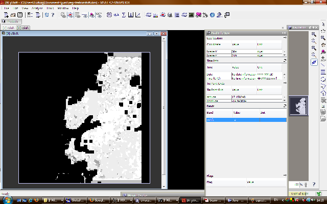

| Stereo-Photogrammetric ATSR Data Analysis | |
The assessment of the co-registration shift of ATSR data follows the ideas laid out in Moroney et al. (2002) for MISR. The workflow is as follows:
The initial steps are identical to the computation of cloud-top height and are not repeated here.

BEAM showing Expected Disparities result image.

BEAM showing Image Coregistration operator and a result image, with constrast stretched.
As for the cloud-top height retrieval the image registration can also be computed in batch mode with the GPT command. The graph description file will need to be similar to this: coregistration.xml
The batch processing is called with parameters as before:
gpt.sh coregistration.xml -t output.dim -SatsrToaL1b=ATS_TOA_1POLRA20030401_024113_000062202015_00103_05668_0591.N1